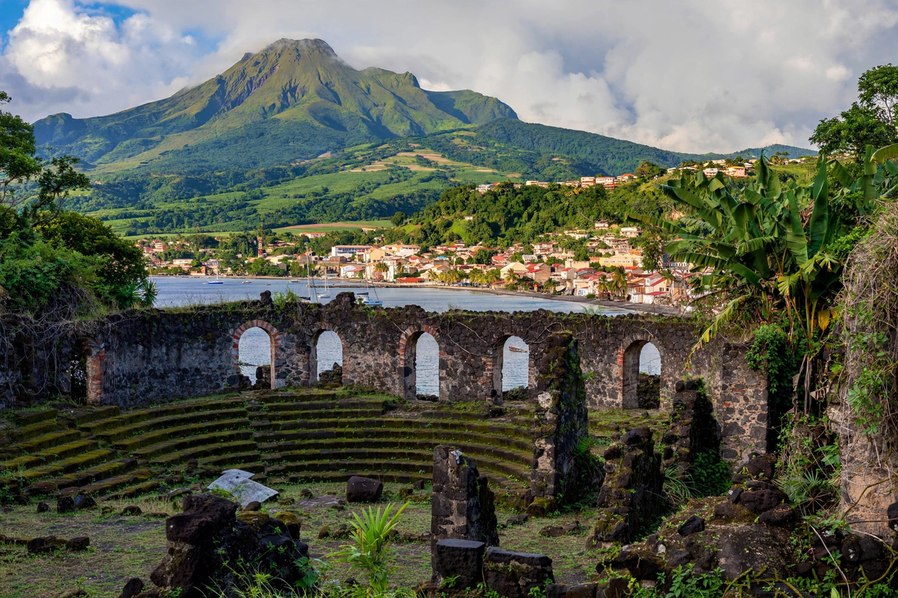

Town in Martinique destroyed by the 1902 eruption of Mount Pelée
| Saint-Pierre | |
|---|---|
 Saint-Pierre beneath Mount Pelée | |
| Location | North-west coast of Martinique, French West Indies |
| Founded | 1635 |
| Population | About 4,000 (modern commune) |
| Known for | Destruction by Mount Pelée, 8 May 1902 |
Saint-Pierre is a town and commune of Martinique, an overseas department of France in the Caribbean. Founded in 1635, it was the island's first and most important city — its commercial and cultural capital, nicknamed the "Paris of the Caribbean" — until it was utterly destroyed by the eruption of Mount Pelée on 8 May 1902.
In spring 1902 Mount Pelée, looming directly above the town, showed increasing signs of activity, but authorities — including Governor Louis Mouttet, anxious not to disrupt an upcoming election — reassured the population and discouraged evacuation. At about 7:52 a.m. on 8 May (Ascension Day), a pyroclastic surge swept down the mountain and across the city at enormous temperature and speed. Within minutes, roughly 28,000–30,000 people were dead and the town was in ruins; ships in the harbour burned and sank. Only a handful of townspeople survived, most famously Ludger Sylbaris, a prisoner held in a thick-walled solitary cell, and the shoemaker Léon Compère-Léandre. The disaster is among the deadliest volcanic eruptions in recorded history and gave volcanology the term "Peléan eruption".
Ruins of the cathedral, theatre, and prison cell where Sylbaris survived are preserved as historic monuments, and the Franck A. Perret Museum commemorates the catastrophe. The town never regained its former status — Fort-de-France became the island's capital — and modern Saint-Pierre, rebuilt partly on the ruins, is a small commune of about 4,000 inhabitants serving as a memorial and heritage site at the foot of the volcano.